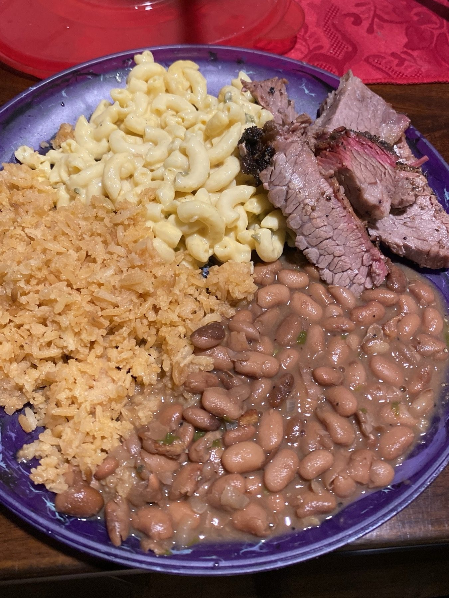

Smoked meats
Brisket, ribs and turkey leg, cooked until it falls off the bone.


Bar-B-Que · Eisenhauer Rd, San Antonio
A roadside stand under a tent. Tender meat, good sides, friendly service.
Tent, plastic chairs, real barbecue
Smoked meat, good sides and a watermelon drink served in the watermelon.
Brisket, ribs and turkey leg, cooked until it falls off the bone.
Mac and cheese, charro beans, green beans and rice next to the meat.

Served in a whole watermelon with a straw, enough to share.


4.9175 Google reviews
Here on a business trip from Ohio. I found this place based on a high google rating. I drove 40 minutes to try it. When I got here I was expecting a restaurant. When I saw it was a road side stand with a tent, plastic chairs and tables and I wasn't sure. I decided to try it anyways. I'm glad I didn't judge this book by its cover. It's some of the best BBQ I have ever had!
This place was absolutely amazing we were not sure on what to order and how much and the gentleman that answered our phone call was so kind and extremely helpful. We ordered 2lbs or brisket a rack of ribs, mac n cheese, beans, and a turkey leg. The meat so was tender it fell off the bone. We had a party of 7 people and no complaints. Everything was so flavorful you have to give them a try you will not regret it!!
Great Bar B Que. The mac and cheese, charro beans, green beans and rice were great. We had all the meats and they were all very good and perfectly cooked. Fair price for the portion sizes. Will revisit them again.

Our story
A barbecue food truck and roadside stand. Friendly, humble staff, full plates and fair prices.
Call ahead and we will help you work out what and how much to order, even for a big group.
Visit
3903 Eisenhauer Rd, San Antonio, TX 78218
Open Saturday and Sunday only. Look for the tent and the checkered tables on Eisenhauer Road.